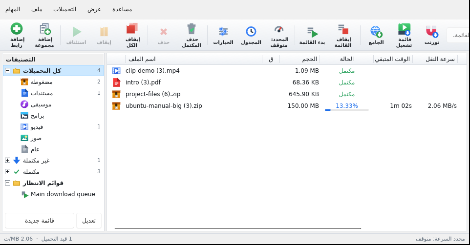
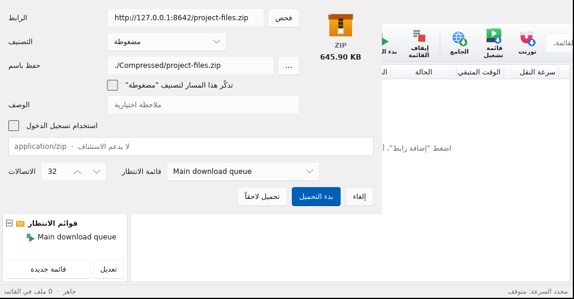

سرعة قصوى
تقسيم كل ملف على ما يصل إلى 32 اتصالًا في الوقت نفسه.
الإصدار 1.0.7 • مجاني 100% • مفتوح المصدر
قسّم ملفاتك على اتصالات متعددة، واستأنف التنزيل من حيث توقف، والتقط الروابط من المتصفح بضغطة واحدة — على ويندوز ولينكس، دون اشتراكات ودون إعلانات.
نسخ لينكس تتضمن ffmpeg مدمجًا — لا حاجة لتثبيت أي شيء إضافي. تحقق من البصمات في SHA256SUMS.txt.

واجهة بسيطة، وأداء يصل إلى أقصى سرعة يسمح بها اتصالك.
تقسيم كل ملف على ما يصل إلى 32 اتصالًا في الوقت نفسه.
أوقف التنزيل وأغلق البرنامج، وسيكمل من حيث توقف عند عودتك.
من الصفحات وقوائم التشغيل، مع اختيار الجودة المناسبة لك.
كروم وفايرفوكس — التقاط الروابط من الصفحة بضغطة واحدة.
كل ملف يذهب إلى مجلده حسب نوعه، دون تدخل منك.
شغّل التنزيلات في موعد محدد، وأوقف الجهاز عند الانتهاء.
حدّ عام للسرعة أو حدّ خاص بكل ملف، حسب ما يناسبك.
لا يجمع بياناتك ولا يرسل أي إحصاءات إلى أي جهة.
يلتقطه البرنامج تلقائيًا من الحافظة، أو أضِفه بنفسك — أو أرسله من إضافة المتصفح.
يحمّل الملف على اتصالات متعددة في الوقت نفسه ليصل إلى أقصى سرعة ممكنة.
انقطع الاتصال؟ أغلقت الجهاز؟ يكمل التنزيل من حيث توقف دون أن يبدأ من جديد.
محاكاة توضيحية تعمل داخل متصفحك — ليست تنزيلًا حقيقيًا. اختر عدد الاتصالات وحجم الملف، واضغط «ابدأ المحاكاة».
يؤدي Ezoo Download ما تؤديه برامج التنزيل المدفوعة مثل IDM — تقسيم الاتصالات، واستئناف التنزيل، والتقاط الروابط من المتصفح — مجانًا، ومفتوح المصدر، ومكتوبًا من الصفر (clean room) دون نسخ كود أي برنامج آخر.
| Ezoo Download | برامج التنزيل المدفوعة التقليدية | |
|---|---|---|
| السعر | مجاني بالكامل | اشتراك أو ترخيص مدفوع |
| الشيفرة المصدرية | مفتوحة وقابلة للمراجعة | مغلقة |
| الإعلانات | لا يوجد | حسب المنتج |
| الأنظمة | ويندوز + لينكس | ويندوز غالبًا |
| جمع البيانات | لا يجمع شيئًا | حسب سياسة المنتج |
Ezoo Download مشروع مستقل، غير تابع لـ IDM أو أي شركة أخرى، ولا يستخدم أيًا من أكوادها أو علاماتها.

اختر نظامك — كل الملفات من صفحة الإصدارات الرسمية لهذا المستودع.
ملف إعداد للمستخدم الحالي، دون صلاحيات المسؤول.
صفحة الإصداراتEzooDownload_1.0.7_amd64.deb — مع ffmpeg مدمج.
EzooDownload-1.0.7-x86_64.AppImage — دون تثبيت.
ezoo-download-1.0.7-1.x86_64.rpm — مع ffmpeg مدمج.
موقّعة بالمفتاح الأصلي — نفس معرّف الإضافة.
تنزيل .crxezoo-download-firefox-1.0.7.xpi
تحقق من سلامة الملفات عبر SHA256SUMS.txt · دليل لينكس الكامل في المستودع.
sudo dpkg -i EzooDownload_1.0.7_amd64.debchmod +x EzooDownload-1.0.7-x86_64.AppImage && ./EzooDownload-1.0.7-x86_64.AppImagesudo rpm -i ezoo-download-1.0.7-1.x86_64.rpmنعم — مجاني بالكامل، دون إعلانات، ودون مزايا محجوبة خلف اشتراك.
نعم. البرنامج مكتوب من الصفر بلغة Rust دون نسخ كود أي برنامج آخر، والشيفرة كاملة في المستودع.
نعم — .deb وAppImage و.rpm، مع أيقونة شريط وتشغيل تلقائي وffmpeg مدمج داخل الحزمة.
يستأنف البرنامج من حيث توقف تلقائيًا، ويمكنك إيقافه واستئنافه يدويًا في أي وقت.
لا. لا يجمع بيانات استخدام ولا يرسل إحصاءات إلى أي جهة.